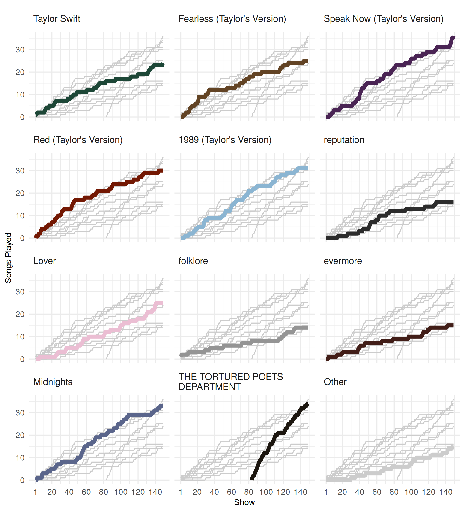

taylor is an R package for accessing and exploring data related to Taylor Swift’s discography. It provides built in data sets containing information on the audio characteristics and lyrics of Taylor’s songs. Additionally, taylor offers some helper functions for creating Taylor Swift-themed data visualizations.
This document introduces you to taylor’s functionality, and shows you how to use them to learn about Taylor Swift’s music.
I trace the evidence
The main data set is taylor_all_songs. This data set
contains audio features from SoundStat and lyrics from Genius for each of Taylor Swift’s
songs.
taylor_all_songs
#> # A tibble: 384 × 26
#> album_name ep album_release track_number track_name artist featuring
#> <chr> <lgl> <date> <int> <chr> <chr> <chr>
#> 1 Taylor Swift FALSE 2006-10-24 1 Tim McGraw Taylo… NA
#> 2 Taylor Swift FALSE 2006-10-24 2 Picture To Bu… Taylo… NA
#> 3 Taylor Swift FALSE 2006-10-24 3 Teardrops On … Taylo… NA
#> 4 Taylor Swift FALSE 2006-10-24 4 A Place In Th… Taylo… NA
#> 5 Taylor Swift FALSE 2006-10-24 5 Cold As You Taylo… NA
#> 6 Taylor Swift FALSE 2006-10-24 6 The Outside Taylo… NA
#> 7 Taylor Swift FALSE 2006-10-24 7 Tied Together… Taylo… NA
#> 8 Taylor Swift FALSE 2006-10-24 8 Stay Beautiful Taylo… NA
#> 9 Taylor Swift FALSE 2006-10-24 9 Should've Sai… Taylo… NA
#> 10 Taylor Swift FALSE 2006-10-24 10 Mary's Song (… Taylo… NA
#> # ℹ 374 more rows
#> # ℹ 19 more variables: bonus_track <lgl>, promotional_release <date>,
#> # single_release <date>, track_release <date>, danceability <dbl>,
#> # energy <dbl>, loudness <dbl>, acousticness <dbl>, instrumentalness <dbl>,
#> # valence <dbl>, tempo <dbl>, duration_ms <int>, explicit <lgl>, key <int>,
#> # mode <int>, key_name <chr>, mode_name <chr>, key_mode <chr>, lyrics <list>The audio features include the danceability, energy, and valence of
each track, which are described in the documentation for the
SoundStat API. The data set also includes meta data for each track
such as the key, tempo, time signature, and duration. Finally, the
lyrics for each track are included in a nested list column. The lyrics
can be accessed by using tidyr::unnest(), or by using
purrr::map() to apply a function to each set of lyrics. For
a detailed description of accessing lyrics, see
vignette("lyrics").
A related data set is taylor_album_songs. This data set
contains all of the same information as taylor_all_songs,
but is filtered to only include tracks that are on official studio
albums. This means that standalone singles (e.g., “Only The Young”) and
features (e.g., Big Red Machine’s “Renegade”) are not included. However,
we do include both the original and Taylor’s Version of albums Taylor
rerecorded now that she owns all her
masters.
taylor also includes a small data set called
taylor_albums. This data set includes the release date for
each album, as well as critic and user ratings from Metacritic.
taylor_albums
#> # A tibble: 18 × 5
#> album_name ep album_release metacritic_score user_score
#> <chr> <lgl> <date> <int> <dbl>
#> 1 Taylor Swift FALSE 2006-10-24 67 8.4
#> 2 The Taylor Swift Holiday Col… TRUE 2007-10-14 NA NA
#> 3 Beautiful Eyes TRUE 2008-07-15 NA NA
#> 4 Fearless FALSE 2008-11-11 73 8.4
#> 5 Speak Now FALSE 2010-10-25 77 8.6
#> 6 Red FALSE 2012-10-22 77 8.6
#> 7 1989 FALSE 2014-10-27 76 8.3
#> 8 reputation FALSE 2017-11-10 71 8.3
#> 9 Lover FALSE 2019-08-23 79 8.4
#> 10 folklore FALSE 2020-07-24 88 9
#> 11 evermore FALSE 2020-12-11 85 8.9
#> 12 Fearless (Taylor's Version) FALSE 2021-04-09 82 8.9
#> 13 Red (Taylor's Version) FALSE 2021-11-12 91 8.9
#> 14 Midnights FALSE 2022-10-21 85 8.3
#> 15 Speak Now (Taylor's Version) FALSE 2023-07-07 81 9.2
#> 16 1989 (Taylor's Version) FALSE 2023-10-27 90 NA
#> 17 THE TORTURED POETS DEPARTMENT FALSE 2024-04-19 76 NA
#> 18 The Life of a Showgirl FALSE 2025-10-03 69 NAFinally, there is a data set dedicated to The Eras Tour, specifically
the surprise songs that Taylor plays at each show. The data set,
eras_tour_surprise, contains the date and location of each
show, the color dress Taylor wore during the acoustic set, and the song
that was performed on each instrument (piano and guitar). The data set
also includes information on any additional songs that were performed as
mashups and guests that Taylor brought out for a performance.
eras_tour_surprise
#> # A tibble: 298 × 9
#> leg date city night dress instrument song mashup guest
#> <chr> <date> <chr> <int> <chr> <chr> <chr> <chr> <chr>
#> 1 North America (Le… 2023-03-17 Glen… 1 red guitar mirr… NA NA
#> 2 North America (Le… 2023-03-17 Glen… 1 red piano Tim … NA NA
#> 3 North America (Le… 2023-03-18 Glen… 2 green guitar this… NA NA
#> 4 North America (Le… 2023-03-18 Glen… 2 green piano Stat… NA NA
#> 5 North America (Le… 2023-03-24 Las … 1 red guitar Our … NA NA
#> 6 North America (Le… 2023-03-24 Las … 1 red piano Snow… NA NA
#> 7 North America (Le… 2023-03-25 Las … 2 green guitar cowb… NA Marc…
#> 8 North America (Le… 2023-03-25 Las … 2 green piano Whit… NA NA
#> 9 North America (Le… 2023-03-31 Arli… 1 green guitar Sad … NA NA
#> 10 North America (Le… 2023-03-31 Arli… 1 green piano Ours… NA NA
#> # ℹ 288 more rowsJust another picture to burn
Often as we explore data, we want to create data visualizations. Naturally, if we’re exploring data for Taylor Swift, we need Taylor Swift-themed visualizations. taylor includes several color palettes and helper functions for ggplot2 to facilitate these visualizations.
First, there are color palettes inspired by each album stored in
album_palettes. For example, we can look at a color palette
based on the cover art for the Lover album.
album_palettes$lover
#> <color_palette[5]>
#> #76BAE0
#> #8C4F66
#> #B8396B
#> #EBBED3
#> #FFF5CCThere is also a color palette that contains one color for each album,
which is useful when comparing albums to each other. For a complete
description of color palette functionality in taylor, see
vignette("palettes").
album_compare
#> <color_palette[16]>
#> taylor_swift
#> fearless
#> speak_now
#> red
#> 1989
#> reputation
#> lover
#> folklore
#> evermore
#> fearless_tv
#> red_tv
#> midnights
#> speak_now_tv
#> 1989_tv
#> tortured_poets
#> showgirltaylor also includes several functions for using the built-in
palettes for color and fill scales with ggplot2. As an example,
scale_color_albums() to map the album_compare
palette to geometries that have color mapped to the album name. In the
following plot, we display the cumulative number of surprise songs
played from each album and use scale_color_albums() to
highlight each album within its respective facet.
Plot code
library(dplyr)
library(tidyr)
library(ggplot2)
leg_labels <- unique(eras_tour_surprise$leg)
leg_labels <- gsub("South America", "South\nAmerica", leg_labels)
surprise_song_count <- eras_tour_surprise |>
nest(dat = -c(leg, date, city, night)) |>
arrange(date) |>
mutate(
leg = factor(
leg,
levels = unique(eras_tour_surprise$leg),
labels = leg_labels
)
) |>
mutate(show_number = seq_len(n()), .after = night) |>
unnest(dat) |>
left_join(
distinct(taylor_album_songs, track_name, album_name),
join_by(song == track_name),
relationship = "many-to-one"
) |>
count(leg, date, city, night, show_number, album_name) |>
complete(nesting(leg, date, city, night, show_number), album_name) |>
mutate(n = replace_na(n, 0)) |>
arrange(album_name, date, night) |>
mutate(surprise_count = cumsum(n), .by = album_name) |>
left_join(
select(taylor_albums, album_name, album_release),
by = "album_name"
) |>
mutate(
surprise_count = case_when(
album_name == "THE TORTURED POETS DEPARTMENT" &
date < album_release ~ NA_integer_,
.default = surprise_count
)
) |>
add_row(
leg = factor("Europe"),
album_name = "THE TORTURED POETS DEPARTMENT",
show_number = 83.5,
surprise_count = 0L
) |>
mutate(
album_name = gsub(" \\(Taylor's Version\\)", "", album_name),
album_name = replace_na(album_name, "Other"),
album_group = album_name,
album_name = factor(
album_name,
c(album_levels, "Other"),
labels = c(
gsub("POETS DEPARTMENT", "POETS\nDEPARTMENT", album_levels),
"Other"
)
)
)
ggplot(surprise_song_count) +
facet_wrap(~album_name, ncol = 3) +
geom_line(
data = ~ select(.x, -album_name),
aes(x = show_number, y = surprise_count, group = album_group),
color = "grey80",
na.rm = TRUE
) +
geom_line(
aes(x = show_number, y = surprise_count, color = album_group),
show.legend = FALSE,
linewidth = 2,
na.rm = TRUE
) +
scale_color_albums(na.value = "grey80") +
scale_x_continuous(breaks = c(1, seq(20, 500, 20))) +
labs(x = "Show", y = "Songs Played") +
theme_minimal() +
theme(
strip.text.x = element_text(hjust = 0, size = 10),
axis.title = element_text(size = 9)
)
Or we can take a closer look at 1989 (Taylor’s Version). In
this figure we can see that from early June to August, Taylor took a
long break between playing songs from this album. The break ended when
Taylor resumed playing songs leading up to the announcement of 1989
(Taylor’s Version) at in Los Angeles at the end of the first U.S.
leg of the tour. For more details on ggplot2 scales provided by taylor,
see vignette("plotting").
Plot code
library(patchwork)
missing_firsts <- tibble(
date = as.Date(c("2023-11-01", "2024-02-01", "2024-05-01", "2024-10-01"))
)
day_ones <- surprise_song_count |>
slice_min(date, by = c(leg, album_name)) |>
select(leg, date, album_name) |>
mutate(date = date - 1)
surprise_dat <- surprise_song_count |>
bind_rows(missing_firsts) |>
arrange(date) |>
fill(leg, .direction = "up") |>
bind_rows(day_ones) |>
arrange(album_name, date) |>
group_by(album_name) |>
fill(surprise_count, .direction = "down")
tour1 <- surprise_dat |>
filter(leg %in% c("North America (Leg 1)", "South\nAmerica")) |>
ggplot() +
facet_grid(cols = vars(leg), scales = "free_x", space = "free_x") +
geom_line(
aes(x = date, y = surprise_count, group = album_name),
color = "grey80",
na.rm = TRUE
) +
geom_line(
data = ~ filter(.x, album_name == "1989"),
aes(x = date, y = surprise_count),
color = album_compare["1989_tv"],
show.legend = FALSE,
linewidth = 2,
na.rm = TRUE
) +
scale_color_albums() +
scale_x_date(breaks = "month", date_labels = "%b\n%Y", expand = c(.02, .02)) +
expand_limits(y = c(0, 37)) +
labs(x = NULL, y = "Songs Played") +
theme_minimal() +
theme(
strip.text.x = element_text(hjust = 0, size = 10),
axis.title = element_text(size = 9)
)
tour2 <- surprise_dat |>
filter(!leg %in% c("North America (Leg 1)", "South\nAmerica")) |>
ggplot() +
facet_grid(cols = vars(leg), scales = "free_x", space = "free_x") +
geom_line(
aes(x = date, y = surprise_count, group = album_name),
color = "grey80",
na.rm = TRUE
) +
geom_line(
data = ~ filter(.x, album_name == "1989"),
aes(x = date, y = surprise_count),
color = album_compare["1989_tv"],
show.legend = FALSE,
linewidth = 2,
na.rm = TRUE
) +
scale_color_albums() +
scale_x_date(breaks = "month", date_labels = "%b\n%Y", expand = c(.02, .02)) +
expand_limits(y = c(0, 37)) +
labs(x = NULL, y = "Songs Played") +
theme_minimal() +
theme(
strip.text.x = element_text(hjust = 0, size = 10),
axis.title = element_text(size = 9)
)
tour1 / tour2 + plot_layout(axes = "collect")